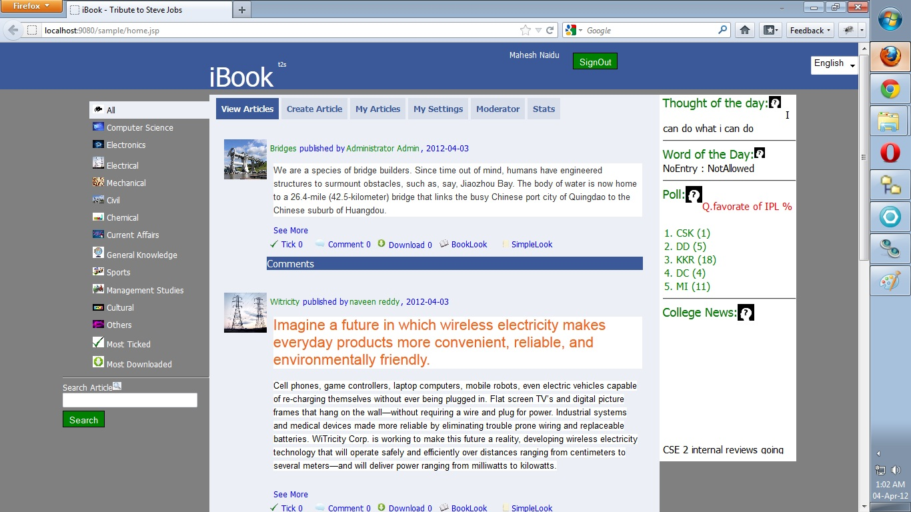

Moderator is also a user and one who has the additonal previlage of accepting or rejecting a article posted by some user on a perticular category.
When a moderator logins he has an adition panel, Moderator.

on the moderator panel, all
the posted articles will be listed. Moderator can read the article and he has to accept or reject the article.
When some one posted an article on a category. An email notification will be sent.